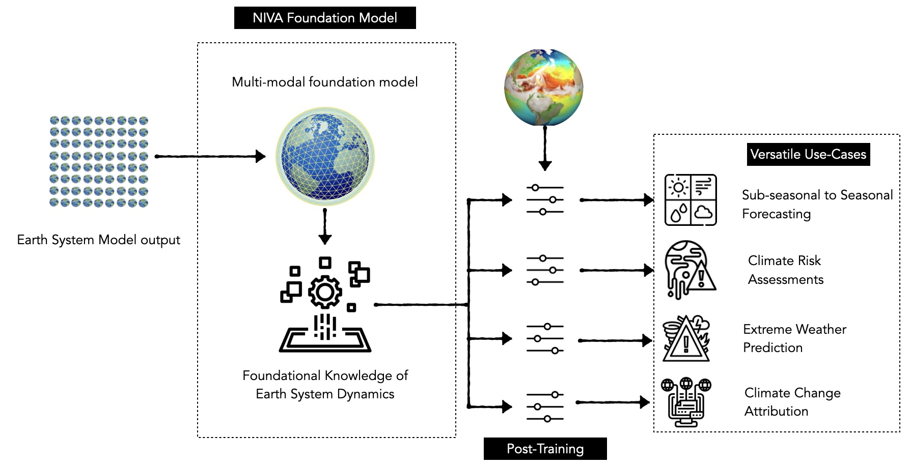
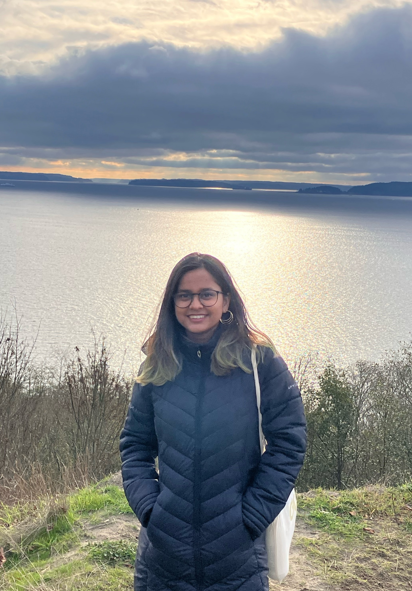
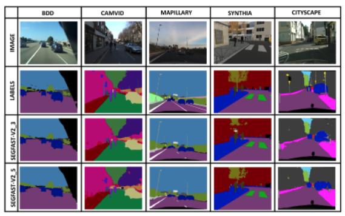
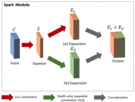

NIVA: A Multimodal Foundation Model for Actionable Earth System Intelligence
Preprint
I am a Computer Science PhD student at Georgia Tech advised by Prof. Steve Mussmann. I am interested in building interactive ML systems that enable domain experts with limited ML expertise to develop models by guiding the machine learning pipeline with their domain knowledge.
Previously, I completed my Master’s at Georgia Tech, where I was advised by Prof. Judy Hoffman. I have also had the unique privilege of working across a range of interdisciplinary industry settings, spanning early-stage startups to large-scale organizations, including Planette AI(with Dr. Kalai Ramea), Corteva Agriscience, HyperVerge, and Microsoft.

| June, 2026 | Our paper titled NIVA: A Multimodal Foundation Model for Actionable Earth System Intelligence is out on ArXiv |
|---|---|
| June, 2025 | Presented Leveraging CESM2 data for machine learning based S2S forecasting at the CESM Workshop 2025 |
| Sep, 2024 | Semi-Truths: A Large-Scale Dataset of AI-Augmented Images for Evaluating Robustness of AI-Generated Image Detectors is accepted to NeurIPS 2024 Track Datasets and Benchmarks |
| Sep, 2024 | SkyScenes featured in Georgia Tech News, College of Computing & Mirage News coverage |
| July, 2024 | SkyScenes: A Synthetic Dataset for Aerial Scene Understanding is accepted to ECCV 2024 |
| May, 2024 | Joined as the Founding Machine Learning Engineer at Planette AI |
| May, 2023 | Interning at Corteva Agriscience this summer |
| August, 2022 | Joined the MS CS Program at Georgia Tech |

Preprint

NeurIPS, 2024

ECCV, 2024

IJMLC, 2019

ICVGIP, 2018